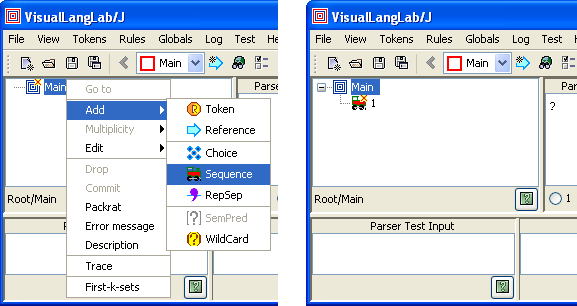
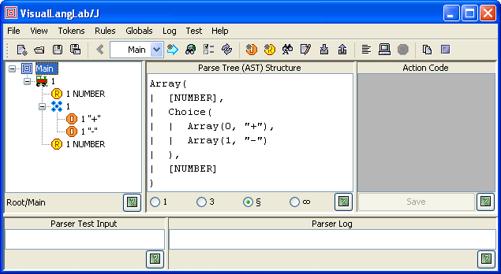

Figure 3. Creating a literal token
| This is a periodically updated version of the article Grammar Without Tears published on java.net. This version was last updated on 4th July 2012 for VisualLangLab 10.38. |
In the world of computing a grammar is a somewhat different thing from the object implied in grammar without tears. But in terms of the misery caused to those who have to deal with them, the two grammars are closely related. This article describes a no tears approach to parser development using VisualLangLab, a free open-source parser-generator. VisualLangLab has an IDE that represents grammar rules (or productions) as intuitive trees, like those in Figure-1 below, without code or scripts of any kind.
Figure 1. VisualLangLab's grammar-trees
These grammar-trees are also executable, and can be run at the click of a button. This encourages the use of tight iterative-incremental development cycles, and greatly improves the pace of development. These features also make it an effective prototyping environment and a training tool.
Parsing techniques and parser generators are a great addition to any developer's arsenal, and VisualLangLab provides a convenient, gentle introduction to those topics. A later article will describe the use of VisualLangLab to produce a domain specific language or DSL for testing Java-Swing programs.
All other parser-generators produce code that you must compile and link with your application code. This leads to two difficulties: users must be fairly proficient programmers, and the application itself must be written in the same language as the tool-generated code. VisualLangLab circumvents both these issues by not generating code.
The secret ingredient of VisualLangLab parsers is parser combinator functions. It uses them to turn grammar-trees directly into a parser at run-time without needing to generate or compile source-code. But users do not have to know anything about combinators to use these capabilities, and the parsers produced can be used in application programs written in any JVM language.
You can find instructions for downloading and running VisualLangLab online at Download, Install, and Run.
When started, VisualLangLab displays the GUI shown in Figure-2 below. The article explains the menus and buttons as needed, but a full description can also be found online at The GUI. All toolbar buttons have tool-tip texts that explain their use.
Figure 2. The VisualLangLab GUI
The five panels (labeled A thru E) are used as described below.
The following sections are a tutorial introduction that lead you through the steps of creating a simple parser.
VisualLangLab supports two kinds of token, literal and regex, that the following discussion and examples will help you differentiate. We create 2 literals and 1 regex that are used in a rule later.
In the following description we create two literal tokens to match the text "+" and "-" respectively (without the quote marks).
To create the first token select Tokens -> New literal from the main menu (left of Figure-3 below). Enter the literal's pattern (+) into the dialog box presented, and click the OK button. This creates a token with the same name as the pattern (enclosed in quote marks). A token's name is used to refer to it from rules, while the pattern describes its contents.
Now create the second literal token with - as the pattern (right of Figure-3).
Figure 3. Creating a literal token
Literal tokens named after their text-pattern are convenient and intuitive in use. But there are cases where a name different from the pattern is needed. For these cases, you should enter the token's name and its pattern (space-separated) into the dialog.
Figure-4 below shows how you can create a regex token. Select Tokens -> New regex from the main menu, and enter the token's name (NUMBER), a space, and the pattern (\\d+) into the dialog box and click OK. You probably recognize the pattern as a Java regular-expression that matches numbers.

Figure 4. Creating a regex token
It is conventional to assign user-chosen names to regex tokens, but VisualLangLab also allows you to skip the user-specified name, allowing the default name ("\\d+" for the example above) to be assigned instead.
Observe that the pattern part in the dialogs above (for literal as well as regex tokens) should be written exactly as if they were inside a literal String in a Java program.
There is not a great deal more to tokens, but if you would like to read the fine print, check out the last part of Editing the Grammar Tree.
The main menu and toolbar also support several other operations. You can find which rules use any particular token (Tokens -> Find token), edit tokens (Tokens -> Edit token), and delete unused tokens (Tokens -> Delete token).
You can specify the character patterns that separate adjacent tokens by invoking Globals -> Whitespace from the main menu, and entering a regular expression into the popped up dialog box. The default whitespace specification is "\\s+".
You can also provide a regular expression for recognizing comments in the input text. Select Globals -> Comment from the main menu, and enter a regular expression into the dialog box. There is no default value for this parameter.
Tokens tend to be reused within application domains, so VisualLangLab allows you to create and use token libraries. These operations are invoked from the main menu by selecting Tokens -> Import tokens and Tokens -> Export tokens, or by using corresponding toolbar buttons.
VisualLangLab represents rules as grammar-trees with intuitive icons (see Figure-1 above) and a context-sensitive popup-menu. This graphical depiction makes grammars comprehensible to a wider range of users. The icons and textual annotations used are described below.
The table below describes the icons used in the grammar-trees.
| Non-terminals | |
| Root - used for the root node of every grammar tree | |
 | Choice - used as the parent of a group of alternatives |
 | Sequence - used as the parent of a sequence of items |
| RepSep - parent of a sequence of similar items that also uses a specified separator | |
| Reference - invokes another named parser | |
| Terminals | |
| Literal - matches a specified literal token | |
 | Regexp - matches a specified regex token |
| Utility nodes & Icon overlays | |
| Token wildcard - a pseudo-token that matches any other defined token, useful for error handling strategies | |
 | Semantic predicate - succeeds or fails depending on the run-time value of an expression |
 | Commit - displayed on top of a node that has the commit annotation |
 | Error: indicates an error in the associated node or rule |
Each grammar-tree node has characteristics (such as multiplicity) that are represented as annotations displayed as text beside the icon. You can change a node's annotations by right-clicking the node and choosing the required settings from the context-menu (see Figure-5 below).

Figure 5. Setting node annotations
The first annotation, a 1-character flag, indicates the node's multiplicity -- the number of times the corresponding entity may occur in the parser's input. You can see examples of its use everywhere in the built-in Sample Grammars. Multiplicity has one of the following values:
Note: The last two settings ("0" and "=") are used to implement syntactic predicates and have no influence on the information gathered by the parser (into to AST or parse-tree). These settings are called not and guard respectively, using names inspired by functions of the same name in the Scala Parser combinator library class.
The second annotation is the name of the entity. The value displayed depends on the type of the node as described below. (The remaining icon types do not have a name)
The remaining annotations, described below, are optional. If any of the optional annotations are present, they are enclosed within square brackets.
All node attributes can be changed via the context menu shown in Figure-5 above.
Finally, if the node has a description, it is displayed last within parenthesis.
When VisualLangLab is started, it automatically creates a new rule named Main. More rules can be created by selecting Rules -> New rule from the main menu and entering the rule's name into the popped-up dialog. A newly created rule contains just the Root node. The root's context menu can be used as described below to edit the rule as needed.
The grammar-tree popup menu is the tool used for creating and editing grammar-trees, and is described fully in Editing the Grammar Tree. In the following example we get our feet just a little wet by composing a simple rule with the tokens we created above.
First, add a Sequence node to the grammar-tree by right-clicking the root node () and selecting Add -> Sequence from the popup menu as shown on the left side of Figure-6 below. A sequence icon () is added to the root, as on the right of the figure.

Figure 6. Adding a sequence node
Then perform the following steps:
) and select Add -> Token. This will bring up a dialog containing a list of token names. Select NUMBER and click the dialog's OK button. A regex icon () is added to the sequence node) to the sequence node) and select Add -> Token. Select "+" in the dialog box and click OK. A literal icon () is added to the choice node. Repeat this action once more, and add the "-" token to the choice nodeYou're done! If your parser does not look like the one in Figure-7 below, use Edit from the grammar-tree's context menu to make the required changes.

Figure 7. Your first visual parser
The text displayed in the panel to the right of the grammar-tree is the AST of the selected node, and so depends on which icon you clicked last. To see the AST of the complete rule, as seen in Figure-7, select (click on) the root node.
The main menu and toolbar also support several other operations. You can find which other rules refer any particular rule (Rules -> Find rule), rename rules (Rules -> Rename rule), and delete unused rules (Rules -> Delete rule).
A grammar can be saved to a file by invoking File -> Save from the main menu. Grammars are stored in XML files with a .vll suffix. The contained XML captures the structure of the rules, the token definitions, and other details, but no generated information of any kind. The XML is quite intuitive and you can use XSLT or a similar technology to transform it into another format (a grammar for another tool, or code of some sort, for example) if required.
A saved grammar can be read back into the GUI by invoking File -> Open from the main menu. This is useful for review the grammar, further editing, or testing. An application program in any JVM language can also Use The API to load a saved grammar and regenerate the parser (as an instance of an API-defined class).
Testing is really easy, you don't have to write any code, use any other tools, or acquire any other skills:
A successful parse is indicated by the appearance of black text under Parser Log. Error messages are rendered in red.

Figure 8. Testing your parser
The figure shows the result of testing with "3 + 5" as the input. The Parser Log area should contain the following text:
Array(3, Array(0, +), 5)The result is an AST with the structure shown under Parse Tree (AST) Structure. Since the test input entered was "3 + 5", we know that the result is correct. However, real-life parsers are too complex for manual testing, so VisualLangLab supports several approaches to automated testing that are described online in Testing Parsers.
That brings us to the end of this quick example. If you feel that the result of parsing "3 + 5" should be 8 instead of Array(3, Pair(0, +), 5) check out the section PS2E-ArithExpr-Action Parser in Sample Grammars.
The following sections briefly describe advanced (but essential) features that are beyond the scope of this article.
The terms parse-tree and Abstract Syntax Tree (or just AST) often are used interchangeably to mean the structure of information gathered during the parsing process. Unlike other tools, VisualLangLab parsers always define and produce an AST. The AST structure is based on the arrangement and properties of the rule-tree nodes, and is displayed in the text area under Parse Tree (AST) Structure (see Figure-8 above). Details about the structure of VisualLangLab ASTs can be found online at AST and Action Code.
Action-code (or just actions) are JavaScript functions used to transform a node's AST on the fly. Action functions are optionally entered at the text area under Action Code ("C" in Figure-2 above). You can see examples of action-code in the PS2E-ArithExpr-Action sample grammar, and more details can be found online at AST and Action Code.
The API enables applications written in any JVM language to use parsers created with VisualLangLab. The API is quite small and simple, containing definitions for the few classes required to perform the following operations.
More details and examples can be found online at Using the API.
To enable users to quickly gain hands-on experience, VisualLangLab contains some built-in sample grammars. These samples can be reviewed, tested, modified, and saved just like any other grammar created from scratch. To open a sample grammar select Help -> Sample grammars from the main menu, and choose any of the samples displayed (see Figure-9 below).

Figure 9. Sample grammars available
More information about these samples can be found online at Sample Grammars.
The article introduces readers to parser development using the completely visual tool VisualLangLab. Its features make it an effective prototyping environment and a training tool, and will hopefully be a useful addition to any developer's skills.